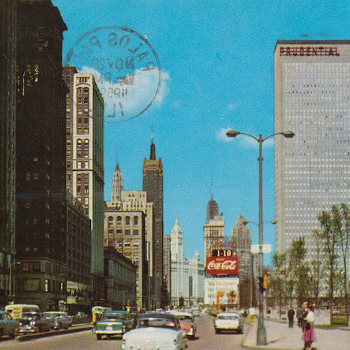
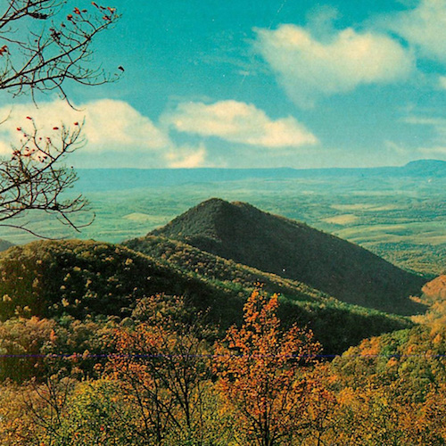

It’s a shame we have to part so soon. Take a closer listen over at wintr.mx or browse through some of my other case studies below.
At some point near the end of 2009, I got sick of hearing the same old Christmas music. We’ve all experienced the fatigue, I think—Bing Crosby & co. crooning wherever we go, just the same as they have every December for the past 70 years. There are way too many talented musicians for us to continue this self-inflicted torture.
So I cobbled together a playlist—20 tracks—of the freshest holiday tunes I could find. I burned CDs for family and friends, designing album art, assembling paper sleeves, and writing cute little notes inside. I creatively titled it Kyle’s Winter Mix. But people seemed to like it, word spread, and I did it again the next year.
I’m dreaming of a web design
In 2011, after two years of distributing CDs to my friends, I moved to a new city. To keep the tradition alive, I developed a website to offer downloads. Year by year, that initial site has been destroyed, rebuilt, and reshaped up to its current form.
- CDs and doodles
- Mini-site hosted on Tumblr
- Redesigned mini-site
- Moved to subdomain of kyledecker.me
- Added download links to past mixes
- Added comments via Disqus
- Completely rebuilt responsive site
- Touch-friendly slider layout
- Displayed complete tracklists for each year
- Implemented basic audio streaming
- Redesigned past album art for consistency
- Hosted on new domain—wintr.mx
- Updated layout featuring fixed sidebar
- Switched from slider to scroll for easier navigation
- Removed Disqus in favor of direct communication
- Optimized audio files for streaming and download
- Organized and restructured code for efficiency

Wintr.mx is a single page site. It’s responsive; the track titles and artists are dynamically pulled from the .mp3 files; songs can be streamed directly on the webpage, downloaded as zipped album, or individually by right-clicking the track name; and the setup is easily extendable—adding a new year is as simple as uploading a folder of mp3s and a background image.
Mixing music, from A to G
In 2011, I had assembled all the tracks I liked, but listening to the album as a whole, the flow just wasn’t there. I shuffled and reshuffled, groping through the dark and hoping to latch onto a solution, when suddenly I was struck: what if I used music theory to guide which track comes next? I analyzed the starting and ending keys of each song, modulating in fifths, stepwise, or in parallel—the same techniques that composers use to gracefully transition from one section to the next. It worked beautifully.
The music has evolved along with the design, each year becoming a little more diverse than the last: the most recent mix includes a Spanish celebration of el año viejo, a Renaissance-era French carol, Swedish electrofolk, some j-pop wishing you a very merry Kurisumasu, and a gospel rock anthem.
Greetings from here or there
Each album cover features a vintage postcard photo of a place I visited during that year. It’s a fun easter egg for my close friends, and a yearly reminder of how fortunate I’ve been to visit these places.

2009
Chicago

2010
Biltmore

2011
Blue Ridge

2012
Key West

2013
Washington, DC
2014
Paris
Results
Wintr.mx has always been simply a way to spread music I enjoy to the people I love, and in that regard I couldn’t be more pleased with its success: I’ve had friends who I haven’t seen since high school message me and say how much they love listening to the mix each December. Family members halfway across the globe telling me how glad they are for it. The tradition will keep going as long as I can continue to find fresh inspiration.